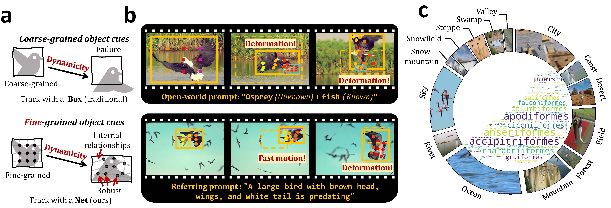
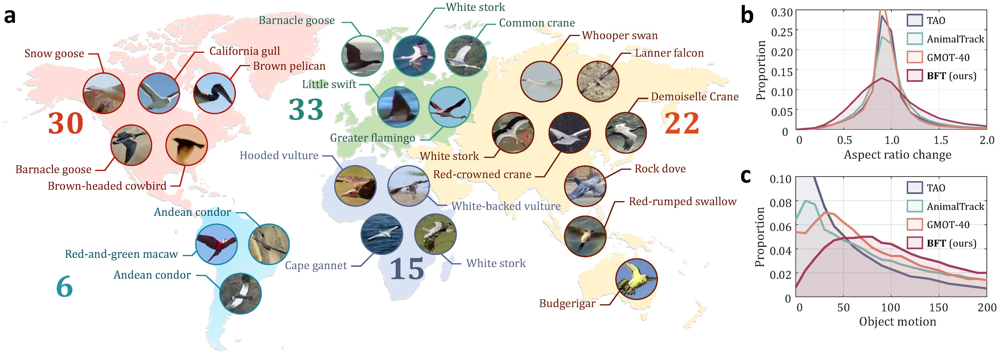
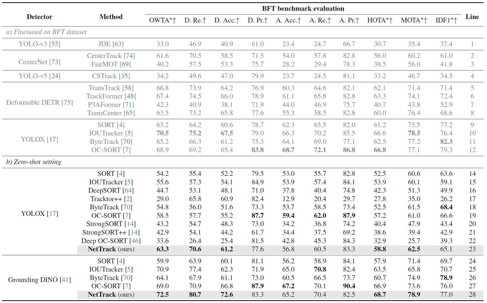

NetTrack: Tracking Highly Dynamic Objects with a Net
CVPR 2024

Abstract
The complex dynamicity of open-world objects presents non-negligible challenges for multi-object tracking (MOT), often manifested as severe deformations, fast motion, and occlusions. Most methods that solely depend on coarse-grained object cues, such as boxes and the overall appearance of the object, are susceptible to degradation due to distorted internal relationships of dynamic objects. To address this problem, this work proposes NetTrack, an efficient, generic, and affordable tracking framework to introduce fine-grained learning that is robust to dynamicity. Specifically, NetTrack constructs a dynamicity-aware association with a fine-grained Net, leveraging point-level visual cues. Correspondingly, a fine-grained sampler and matching method have been incorporated. Furthermore, NetTrack learns object-text correspondence for fine-grained localization. To evaluate MOT in extremely dynamic open-world scenarios, a bird flock tracking (BFT) dataset is constructed, which exhibits high dynamicity with diverse species and open-world scenarios. Comprehensive evaluation on BFT validates the effectiveness of fine-grained learning on object dynamicity, and thorough transfer experiments on challenging open-world benchmarks, i.e., TAO, TAO-OW, AnimalTrack, and GMOT-40, validate the strong generalization ability of NetTrack even without finetuning.

a The visualization of the proposed NetTrack is similar to a Net. Object dynamicity distorts the internal relationships of the object, presenting challenges for traditional coarse-grained tracking methods that rely solely on bounding boxes. While NetTrack introduces fine-grained Nets that are robust to dynamicity. b Qualitative results of NetTrack tracking highly dynamic objects under open-world tracking and referring expression comprehension settings. Dynamicity like deformation and fast motion results in drastic changes in the coarse-grained representation, while the fine-grained Nets can contract robustly. The dashed boxes represent the object position from the previous time step. c We propose a challenging benchmark named BFT, dedicated to evaluating highly dynamic object tracking with abundant scenarios shown in the external circular and diverse species shown in the central word cloud.
Video
Approach
The high dynamicity of open-world objects, manifested as severe deformation, fast motion, and
frequent occlusion, poses challenges for existing methods in two major aspects:
1) Association For most methods relying solely on coarse-grained visual
representations, the high dynamicity renders the temporal continuity fragile in terms of
association.
2) Localization SoTA
methods typically learn the coarse-grained correspondence between the
entire image and text in pre-training, where the dynamic objects are hard to localize.
In this work, we propose NetTrack, introducing fine-grained learning to address the above two
aspects.
Regarding association, NetTrack utilizes physical points on the object's appearance that are less
susceptible to object dynamicity and form fine-grained visual cues. For localization, grounded
pre-training is utilized to learn fine-grained correspondences between objects and text.
Object-text correspondence for fine-grained localization This work adopts phrase grounding as pre-training method. Compared to CLIP-based tracking methods that utilize coarse-grained image-text correspondence, NetTrack can more effectively distinguish dynamic objects. NetTrack can also learn contextual information from LLM to achieve practical real-world applications for efficient dynamic object tracking.
Fine-grained Net for dynamicity-aware association NetTrack tracks the object with a fine-grained Net, which leverages points of interest (POIs) on the surface of object appearance. We design a fine-grained sampler to discover potential POIs and utilize fine-grained visual cues of these points, along with the emerging physical point tracking methods for robust tracking. Subsequently, a simple yet effective fine-grained similarity calculation method is proposed to determine the containment relationship between the tracked POIs and candidate objects.
Data

a Bird flocks are among the most dynamic objects to track in the open world and thus are considered ideal subjects for this work. We construct BFT dataset, which incorporates 22 bird species and 14 common natural and cultural scenes, covering six continents. After careful data curation and annotation, the BFT dataset contains 106 videos, split into 35/25/36 for train/val/test. b The severe aspect ratio change of objects in BFT dataset is shown, which demonstrates the high dynamicity. c The large object motion also shows the high dynamicity of the BFT dataset.
Results

The experimental results mainly demonstrate that:
1) Even in the zero-shot open-world tracking setting, NetTrack achieves superior
performance
compared to SoTA finetuned closed-set trackers.
2) In comparison to the results after fine-tuning (lines 9-12), closed-set trackers
exhibit
sub-optimal zero-shot generalization ability (lines 13,14,17,18) in highly dynamic open-world
scenarios.
For more details, please refer to our paper.
Citation
@inproceedings{nettrack2024cvpr,
title={NetTrack: Tracking Dynamic Objects with a Net},
author={Guangze Zheng and Shijie Lin and Haobo Zuo and Changhong Fu and Jia Pan},
booktitle={Proceedings of the IEEE/CVF Conference on Computer Vision and Pattern Recognition (CVPR)},
year={2024},
pages={1-8},
}
Open Source
The NetTrack code and BFT dataset are under Apache License.
Acknowledgements
This project is supported by the Innovation and Technology Commission of the HKSAR Government under
the InnoHK initiative, ITF GHP/126/21GD and HKU's CRF seed grant. The authors would like to thank
Dr. Ming-Shan Wang for his advice.
The website design is inspired by RT-1, whose
template was borrowed from Jon Barron.